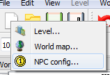
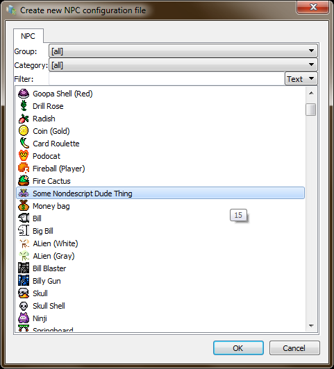
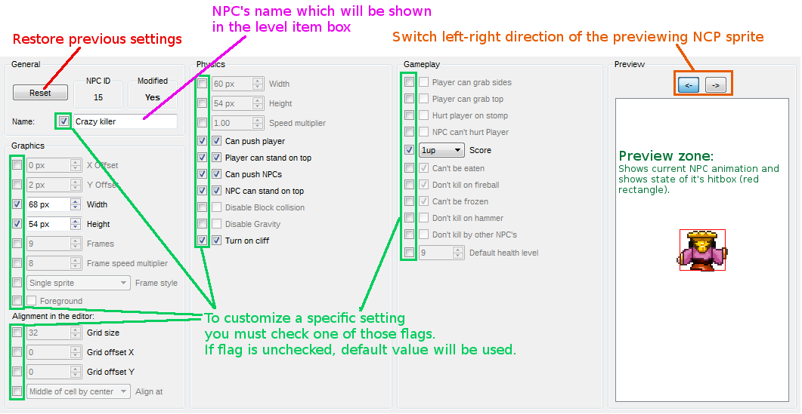

THIS DOCUMENTATION IS OBSOLETE.
This documentation targets to PGE Editor 0.3.1.14 and older. Please use an updated documentation if you target to Moondust Project and TheXTech.
The updated documentation you can find here.
The Editor have own powerful NPC editor which can emulate the NPC in a real time which helps you with configuring and debugging process.
Each NPC config basing on the global configuration and using for customize already configured NPC.
Selecting "New" NPC Config

Selecting NPC base for your config

NPC Editor workspace

Copyright © 2014-2017 Platformer Game Engine by Wohlstand project.